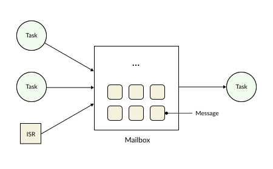
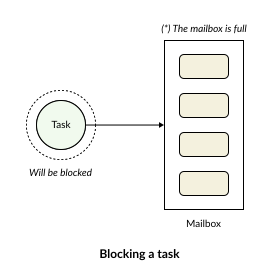
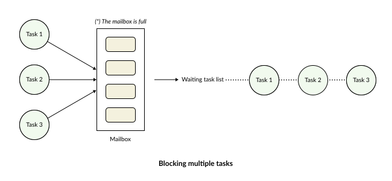
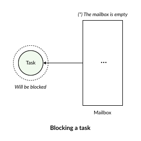
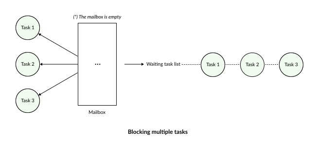

Mailbox
A Mailbox is a mechanism that allows tasks to send and receive messages to and from one another. Through a mailbox, tasks can exchange data without directly accessing each other’s memory space.
{kind=link}

A message can represent:
Sensor data
System status
Events
Pointers to a data region
In RK, a mailbox can accommodate any custom data type provided by the user.
Mailbox Waiting Mechanism
In real-world applications, message transmission and reception do not always occur in a fixed, deterministic cycle; instead, they depend on specific application requirements and runtime tasks. To reduce CPU overhead and ensure data synchronization, RK implements a mailbox waiting mechanism applied in the following scenarios:
Sending wait: A task attempts to send data to another task, but the destination mailbox is already full.
Receiving wait: A task needs to wait for data from another task before it can proceed with its processing.
Sending Wait
A sending wait occurs when a task intends to push a message into a mailbox, but that mailbox is full.
{kind=link}

When this scenario occurs, the task is transitioned into a waiting state and appended to the mailbox’s send-wait list. The task will not be allocated CPU time until either:
Another task reads a message from the mailbox, thereby freeing up a slot.
The specified waiting time (Timeout) expires.
Once a slot becomes available in the mailbox, the RK’s scheduler wakes up one or more tasks from the send-wait list to resume their message-sending operation. This mechanism effectively prevents data loss when the transmission rate exceeds the processing/reception rate.
When multiple tasks simultaneously attempt to post messages into a full mailbox, they are appended to a queue of waiting tasks—a mechanism very similar to standing in line to order food.
{kind=link}

As soon as space opens up in the mailbox, the system allows the “most handsome guy” (the task with the highest priority) to proceed with sending its message first.
Receiving Wait
A receiving wait occurs when a task attempts to retrieve a message from a mailbox, but the mailbox is currently empty.
{kind=link}

In this scenario, the task relinquishes its CPU usage and enters a blocked state. The Scheduler then reallocates CPU time to other tasks that are currently in the ready state. The task is only awakened when a new message arrives or when the timeout expires. This mechanism eliminates the need for continuous mailbox polling inside loops—a practice that wastes CPU resources and degrades overall system performance.
Similarly, if multiple tasks are attempting to receive a message but the mailbox is empty, the RTOS will aggregate and block these tasks, placing them into a waiting list. As soon as a message arrives, it will be delivered to the task with the highest priority in that receive-wait list first.
{kind=link}

Thanks to this mechanism, data can be processed almost instantaneously upon arriving at the mailbox.